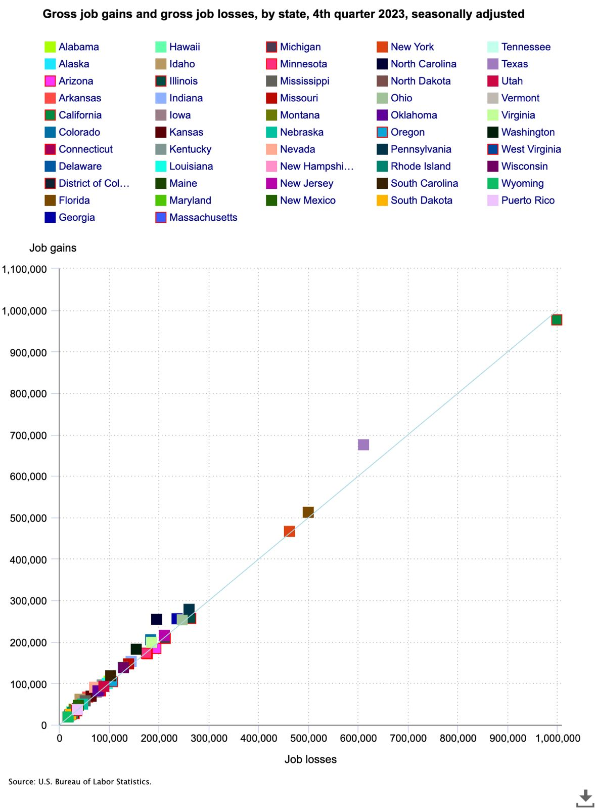
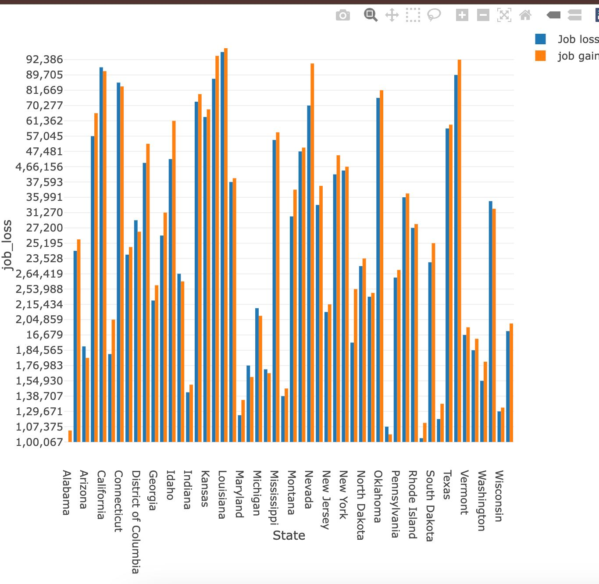
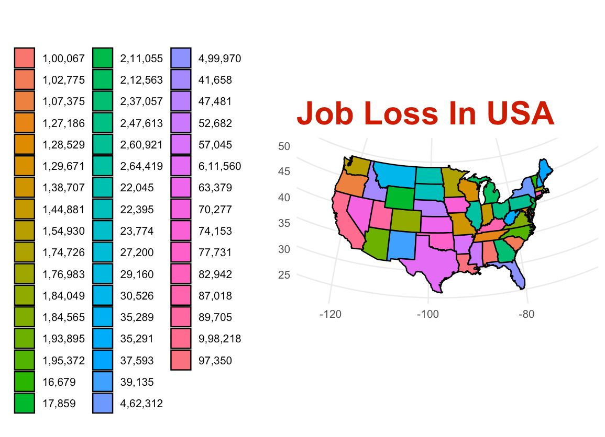
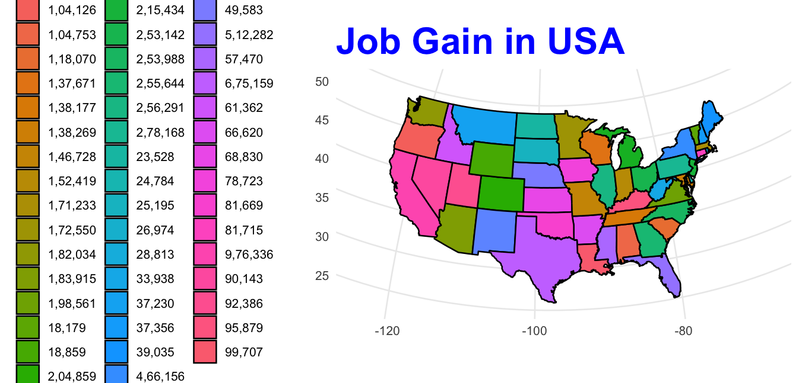

Project Details 1
Original data visualization:
The data used for the analysis and visualizations in this report have been sourced from the U.S. Bureau of Labor Statistics (BLS).

The initial scatter plot, which shows how gross job gains and losses are represented visually across the states in the United States. Each state is represented by a coloured square, and the x-axis shows job losses and the y-axis shows job gains. A thick legend at the top of the plot indicates which colours correspond to which states.
Problems in the scatter plots:
Cluttered Legend:
The legend in the scatter plot has too many states, each represented by a different colour. The labels of some states are even reduced , making it challenging to determine which states the colours correspond to. The excessive range of colours produces a jumbled image that makes viewers constantly consult the legend. A good legend should have clear distinguish between the colour patterns used and positions, title of legend, ordering of the legends [1] .
Data Overlap: A large number of the data points, which indicate states with lower job gains and losses, are closely clustered in the graph’s lower left corner. This causes visual congestion, which makes it challenging to distinguish between different states. Viewers might find it difficult to derive significant conclusions from the scatter plot if states with comparable data are not clearly distinguished from one another.
Lack of Geographic Context: One of the main limitations of the scatter plot is that it does not provide a geographic representation of the states. Viewers are missing out on possible regional trends and patterns if they are unable to determine the locations of these states. For instance, it can be challenging to determine whether job growth and losses are concentrated in particular regions of the nation. Visualization use ranges from a single, private user to a large, public audience [2].
Interpreting the Scale: Although the scatter plot has linear scales for job gains and losses, it lacks significant annotations or that would aid viewers in rapidly determining the extent of state-to-state variations. Lack of such context makes it more difficult to quickly understand the connections between job gains and losses [3].
Simplified Colour Scheme: In contrast to the scatter plot, the color scheme in the Choropleth Map is more organized and controllable. States are categorized into color-coded groups according to job gain ranges rather than having individual colors. Because viewers can quickly scan the map and understand the relative job growth in each state without having to cross-reference a legend, this simplification facilitates easier interpretation [4].
Firstly, it presents the data in a visually appealing manner that is relevant to geography, making it easy for viewers to spot regional patterns and trends in job growth. An immediate comprehension of the job gain magnitudes across states is provided by the addition of quantitative ranges adjacent to the colour scale, which further improves clarity. Last but not least, the choropleth map presents a more orderly visual hierarchy by emphasizing the states that are most crucial for job growth without having overlapping data points to distract the viewer.
Modified visualizations:
For redesigning the scatter plot data, The data for the plot is categorical which has data which contains name of country, job loss, job gains, state abbreviations. Firstly we did bar chart for the data set.
Bar chart:

- Clear separation of job gains and losses: The bar chart provides two distinct bars which provides each state (job gains and job losses). This makes it easy to see the exact numbers for both metrics side by side.
- Direct value comparison: By looking at the heights of the bars, you can quickly see the exact difference between job gains and losses in each state. This is useful for those who prefer a clear breakdown between the two values for a direct comparison.
- State-by-state focus: The bar chart allows for detailed state-by-state analysis. For someone interested in looking at specific states and their individual job metrics, this chart offers an easier method to isolate a state’s performance.
Why this is better than other plot :
The bar chart makes it simple to quickly see the differences for individual states by giving a visual breakdown of the precise job gains and losses for each state.Bar charts are more recognizable and simpler to understand for certain audiences
USA Map plot:
We used map plot because in data set we have data of united states of america and statistics of job gains and losses per state. So it become easy to represent data in maps plot and helps in understanding the statistics.


- Geographic Context: The map provides a clear geographic representation, allowing viewers to easily identify regional trends and patterns in job gains.
- Simplified Colour Scheme: Instead of individual colours for each state, the map groups states into ranges, making interpretation easier and reducing visual clutter.
- Quantitative Clarity: The map includes job gain ranges, providing explicit data without guesswork and making it simple to identify which states are experiencing the most or least growth.
- Better Visual Hierarchy: The map highlights states with the largest job gains more clearly, emphasizing economically active regions like Texas and California without the distraction of overlapping data points.
Why this is better than other plot:
USA Map is better because it uses a color-coded map to provide an obvious and simple-to-understand representation of job gains across U.S. states. This makes quickly observing regional trends easy. There is no need to cross-reference a complicated legend because the color scale is directly connected to the job gain numbers. Alternatively, a scatter plot makes it more difficult to quickly interpret job gains and losses because it has a lot of overlapping data points and an unreadable legend. Better geographic clarity and context can be found on the map found in USA Map.